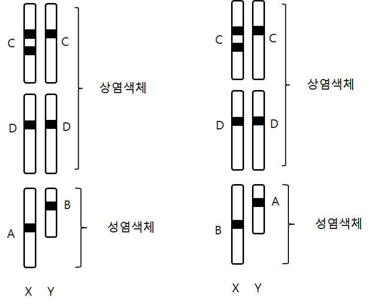

해설 1
문항해설
문제 1-1은 체세포와 생식세포에서 염색체 수와 DNA 양이 바뀌는 것을 이해하고 있는 지를 묻는 질문이고, 유전자 중복 사항을 넣어서 학생들이 염색체 구조 돌연변이를 이해하고 있는지 물었음
문제 1-2는 염색체와 유전자 수의 개념을 정확히 이해하고 응용할 수 있는지를 평가하는 문제로 제시문 (나)에 나온 내용을 제대로 해석하고 분석해야함
예시답안
[1-1]
문항 해설에 나와 있는 것처럼 유추과정을 논술하고, 아래와 같은 답을 작성한다.
A, B 유전자는 성염색체에 있으며 X, Y에 위치하는 것이 2가지 경우가 가능하다.
C, D 유전자는 상염색체에 있으며 C유전자는 한곳에 중복되어 있다.

[1-2]
유전자의 수를 정리해서 아래와 같이 표로 나타낸다.
순서는 바뀌어도 문제가 없다.
| 세포 1 | 세포 1 | |||||||
|---|---|---|---|---|---|---|---|---|
| A | B | C | D | A | B | C | D | |
| #1 | 1 | 1 | 3 | 2 | 1 | 1 | 3 | 2 |
| #2 | 1 | 0 | 2 | 1 | 1 | 0 | 2 | 1 |
| #3 | 1 | 1 | 3 | 2 | 1 | 0 | 2 | 1 |
| #4 | 1 | 0 | 1 | 1 | 0 | 1 | 1 | 1 |
| #5 | 1 | 1 | 3 | 2 | 0 | 1 | 1 | 1 |